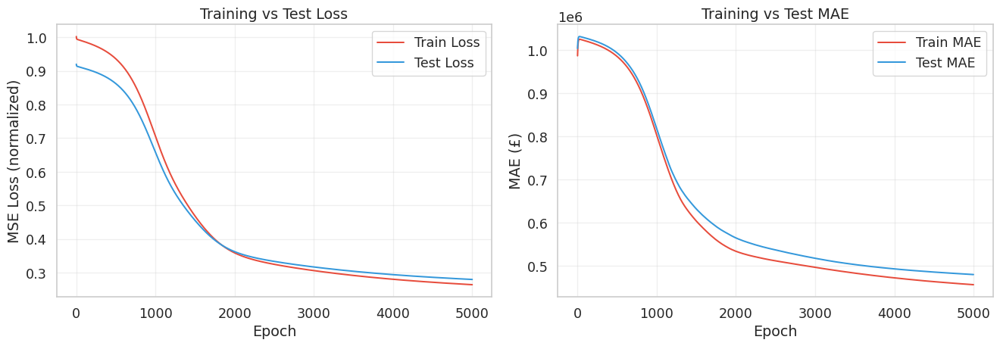
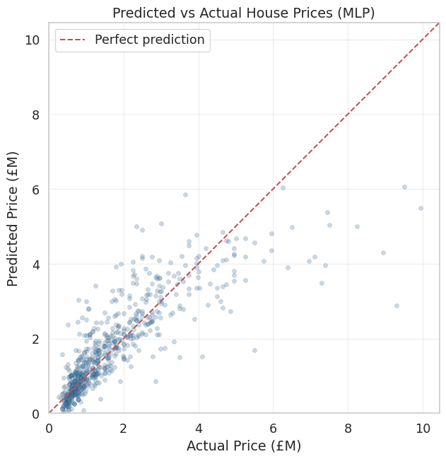

import numpy as np
import matplotlib.pyplot as plt
import seaborn as sns
sns.set_theme(style='whitegrid', font_scale=1.2)Lab4-1. MLP Regression from Scratch

Objectives
- Understand how the same building blocks (
Linear,Sigmoid,Identity) from Labs 3-1 through 3-3 can be stacked into a deep network using a genericMLPcontainer class. - Implement a Multi-Layer Perceptron (MLP) for regression using the modular architecture from the lecture:
MLPclass with ablockslist, and a decoupledOptimizerclass. - Observe how adding hidden layers with nonlinear activations improves prediction accuracy compared to the single-layer Linear Regression from Lab 3-1.
- Visualize training dynamics and evaluate model performance on the London house price dataset.
NoteFrom Single-Layer to Multi-Layer
In Labs 3-1 through 3-3, each model used a single Linear layer followed by one activation. The forward and backward passes were written out explicitly inside each model class. In this lab, we introduce two new abstractions from the lecture: the MLP container that chains any sequence of blocks via a for loop, and a decoupled Optimizer that updates all Linear layers automatically. These abstractions let us scale from 1 layer to 100 layers without rewriting a single line of the training loop.
0. Setup
1. Preparing the Dataset
We load the same London houses dataset and apply the same preprocessing as Lab 3-1: 80/20 train-test split, then normalize both features and target using training statistics only.
from sklearn.model_selection import train_test_split
# Load data
data = np.genfromtxt("../../data/london_houses_transformed.csv", delimiter=",", skip_header=1)
X = data[:, :-1]
Y = data[:, -1:]
# Train / Test split (80/20)
X_train_raw, X_test_raw, Y_train_raw, Y_test_raw = train_test_split(
X, Y, test_size=0.2, random_state=15
)
# Normalize features (fit on training data only to avoid data leakage)
X_mean, X_std = X_train_raw.mean(axis=0), X_train_raw.std(axis=0) + 1e-8
X_train = (X_train_raw - X_mean) / X_std
X_test = (X_test_raw - X_mean) / X_std
# Normalize target
Y_mean, Y_std = Y_train_raw.mean(), Y_train_raw.std()
Y_train = (Y_train_raw - Y_mean) / Y_std
Y_test = (Y_test_raw - Y_mean) / Y_std
N, D = X_train.shape
print(f"Dataset: {X.shape[0]} total samples")
print(f" Train: {N} | Test: {X_test.shape[0]}")
print(f" Features (D): {D}")Dataset: 3441 total samples
Train: 2752 | Test: 689
Features (D): 872. Defining the Layer Building Blocks
These are the same classes from the previous labs and the lecture. All three are reused without any modification.
2.1 Linear Layer
Forward:
\[z = \mathbf{x}\mathbf{W}^\top + b\]
Backward (given upstream gradient \(\texttt{grad} = \partial \mathcal{L} / \partial z\)):
\[\frac{\partial z}{\partial \mathbf{W}} = \mathbf{x}, \quad \frac{\partial z}{\partial b} = 1, \quad \frac{\partial z}{\partial \mathbf{x}} = \mathbf{W}\]
\[\Longrightarrow \qquad \frac{\partial \mathcal{L}}{\partial \mathbf{W}} = (\underbrace{\frac{\partial \mathcal{L}}{\partial z}}_{\texttt{grad}})^{\top} \!\cdot\; \underbrace{\frac{\partial z}{\partial \mathbf{W}}}_{\mathbf{x}} = \texttt{grad}^\top \mathbf{x}, \qquad \frac{\partial \mathcal{L}}{\partial b} = \sum_i \texttt{grad}_i, \qquad \frac{\partial \mathcal{L}}{\partial \mathbf{x}} = \underbrace{\frac{\partial \mathcal{L}}{\partial z}}_{\texttt{grad}} \!\cdot\; \underbrace{\frac{\partial z}{\partial \mathbf{x}}}_{\mathbf{W}} = \texttt{grad}\;\mathbf{W}\]
class Linear:
def __init__(self, in_dims, out_dims):
bound = 1 / np.sqrt(in_dims)
self.W = np.random.uniform(-bound, bound, size=(out_dims, in_dims))
self.b = np.random.uniform(-bound, bound, size=(out_dims,))
def forward(self, x):
self.x = x
return x @ self.W.T + self.b
def backward(self, grad):
self.deltaW = grad.T @ self.x
self.deltab = grad.sum(axis=0)
return grad @ self.W2.2 Sigmoid Layer
Forward:
\[\sigma(z) = \frac{1}{1 + e^{-z}}\]
Backward (given upstream gradient \(\texttt{grad} = \partial \mathcal{L} / \partial \sigma\)):
\[\frac{\partial \sigma}{\partial z} = \sigma(z)(1 - \sigma(z)) \qquad \Longrightarrow \qquad \frac{\partial \mathcal{L}}{\partial z} = \underbrace{\frac{\partial \mathcal{L}}{\partial \sigma}}_{\texttt{grad}} \cdot \underbrace{\frac{\partial \sigma}{\partial z}}_{\sigma(z)(1 - \sigma(z))} = \texttt{grad} \cdot \sigma(z)(1 - \sigma(z))\]
class Sigmoid:
def forward(self, x):
self.a = 1.0 / (1.0 + np.exp(-x))
return self.a
def backward(self, grad):
return grad * self.a * (1 - self.a)2.3 Identity Layer
Forward:
\[h(z) = z\]
Backward (given upstream gradient \(\texttt{grad}\)):
\[\frac{\partial h}{\partial z} = 1 \qquad \Longrightarrow \qquad \frac{\partial \mathcal{L}}{\partial z} = \underbrace{\frac{\partial \mathcal{L}}{\partial h}}_{\texttt{grad}} \cdot \frac{\partial h}{\partial z} = \texttt{grad} \cdot 1 = \texttt{grad}\]
class Identity:
def forward(self, x):
return x
def backward(self, grad):
return grad3. Defining the MSE Loss
Forward:
\[\mathcal{L}_{\text{MSE}} = \frac{1}{N}\sum_{i=1}^{N}(\hat{y}_i - y_i)^2\]
Backward (gradient with respect to predictions):
\[\frac{\partial \mathcal{L}}{\partial \hat{y}_i} = \frac{2}{N}(\hat{y}_i - y_i)\]
class MSELoss:
def forward(self, pred, true):
self.pred = pred
self.true = true
self.N = pred.shape[0]
return ((pred - true) ** 2).mean()
def backward(self):
return (2 / self.N) * (self.pred - self.true)
def __call__(self, pred, true):
return self.forward(pred, true)4. The MLP Container and Optimizer
This is the key difference from Labs 3-1 through 3-3. Instead of writing explicit layer-by-layer calls inside each model class, we introduce two generic abstractions from the lecture.
4.1 MLP Class
The MLP class takes a list of blocks and chains them together. The forward() method passes data through each block in sequence. The backward() method reverses through them, propagating gradients from the output back to the input. This is the same class the lecture used for the 3-layer network, but it works identically for any number of layers.
class MLP:
def __init__(self, blocks: list):
self.blocks = blocks
def forward(self, x):
for block in self.blocks:
x = block.forward(x)
return x
def backward(self, grad):
for block in self.blocks[::-1]:
grad = block.backward(grad)
return grad4.2 Optimizer Class
The Optimizer is decoupled from the model. It scans the model’s blocks list, finds every Linear layer, and applies the gradient descent update using the gradients (deltaW, deltab) that were computed during the backward pass. This means adding more Linear layers to the model requires zero changes to the optimizer.
class Optimizer:
def __init__(self, lr, model):
self.lr = lr
self.model = model
def step(self):
for block in self.model.blocks:
if block.__class__ == Linear:
block.W = block.W - self.lr * block.deltaW
block.b = block.b - self.lr * block.deltab
TipWhy Decouple the Optimizer?
In Labs 3-1 through 3-3, the _update() method was hardcoded inside each model class, directly referencing self.linear.W. This breaks as soon as you have multiple Linear layers. The decoupled Optimizer solves this by iterating over all blocks and updating any Linear layer it finds. This is exactly how PyTorch’s torch.optim.SGD works: you pass it model.parameters() and it handles all of them, regardless of how many layers exist.
5. Building and Training the MLP
5.1 Model Architecture
The lecture’s MLP architecture is:
\[\mathbf{X} \xrightarrow{\text{Linear}(87, 64)} \xrightarrow{\text{Sigmoid}} \xrightarrow{\text{Linear}(64, 32)} \xrightarrow{\text{Sigmoid}} \xrightarrow{\text{Linear}(32, 1)} \xrightarrow{\text{Identity}} \hat{Y}\]
This network has two hidden layers (64 and 32 neurons) with sigmoid activations, and one output neuron with identity activation for regression. Compare this with Lab 3-1, which was simply Linear(87, 1) followed by Identity.
np.random.seed(42)
model = MLP([
Linear(D, 64), Sigmoid(),
Linear(64, 32), Sigmoid(),
Linear(32, 1), Identity()
])
optimizer = Optimizer(lr=0.01, model=model)5.2 Training Loop
The train() function follows the same three-step pattern (forward, backward, step) from all previous labs. The difference is that model.forward() and model.backward() now internally chain through 6 blocks instead of 2, and optimizer.step() updates 3 Linear layers instead of 1.
def train(model, optimizer, X_train, Y_train, X_test, Y_test,
Y_mean, Y_std, loss_func=MSELoss(), epochs=5000, print_every=500):
history = {"train_loss": [], "test_loss": [],
"train_mae": [], "test_mae": []}
for epoch in range(epochs):
# --- Forward pass ---
prediction = model.forward(X_train)
loss = loss_func(prediction, Y_train)
# --- Backward pass ---
grad = loss_func.backward()
model.backward(grad)
# --- Update all Linear layers ---
optimizer.step()
# --- Record training metrics ---
history["train_loss"].append(loss)
train_mae = np.abs(
prediction * Y_std + Y_mean - (Y_train * Y_std + Y_mean)
).mean()
history["train_mae"].append(train_mae)
# --- Evaluate on test set ---
test_pred = model.forward(X_test)
test_loss = ((test_pred - Y_test) ** 2).mean()
test_mae = np.abs(
test_pred * Y_std + Y_mean - (Y_test * Y_std + Y_mean)
).mean()
history["test_loss"].append(test_loss)
history["test_mae"].append(test_mae)
if epoch % print_every == 0 or epoch == epochs - 1:
print(f" Epoch {epoch:4d} | "
f"Train Loss: {loss:.6f} | Test Loss: {test_loss:.6f}")
return history5.3 Running the Training
history = train(model, optimizer, X_train, Y_train, X_test, Y_test,
Y_mean, Y_std, epochs=5000, print_every=500) Epoch 0 | Train Loss: 1.002276 | Test Loss: 0.919860
Epoch 500 | Train Loss: 0.935780 | Test Loss: 0.862027
Epoch 1000 | Train Loss: 0.705099 | Test Loss: 0.657530
Epoch 1500 | Train Loss: 0.467778 | Test Loss: 0.454862
Epoch 2000 | Train Loss: 0.358349 | Test Loss: 0.362028
Epoch 2500 | Train Loss: 0.324365 | Test Loss: 0.333076
Epoch 3000 | Train Loss: 0.305670 | Test Loss: 0.316486
Epoch 3500 | Train Loss: 0.291287 | Test Loss: 0.303706
Epoch 4000 | Train Loss: 0.279909 | Test Loss: 0.293656
Epoch 4500 | Train Loss: 0.270982 | Test Loss: 0.285747
Epoch 4999 | Train Loss: 0.263814 | Test Loss: 0.2793825.4 Visualizing the Training Curves
fig, (ax1, ax2) = plt.subplots(1, 2, figsize=(14, 5))
ax1.plot(history["train_loss"], label="Train Loss", color="#e74c3c", linewidth=1.5)
ax1.plot(history["test_loss"], label="Test Loss", color="#3498db", linewidth=1.5)
ax1.set_xlabel("Epoch")
ax1.set_ylabel("MSE Loss (normalized)")
ax1.set_title("Training vs Test Loss")
ax1.legend()
ax1.grid(True, alpha=0.3)
ax2.plot(history["train_mae"], label="Train MAE", color="#e74c3c", linewidth=1.5)
ax2.plot(history["test_mae"], label="Test MAE", color="#3498db", linewidth=1.5)
ax2.set_xlabel("Epoch")
ax2.set_ylabel("MAE (£)")
ax2.set_title("Training vs Test MAE")
ax2.legend()
ax2.grid(True, alpha=0.3)
plt.tight_layout()
plt.show()
Unlike the linear models from previous labs where train and test curves stayed very close, the MLP may show a small gap between train and test loss. This is expected: with more parameters (87x64 + 64x32 + 32x1 = 7,648 weights vs. 87 for linear regression), the MLP has enough capacity to fit the training data more tightly, which can lead to mild overfitting.
6. Evaluation on Unseen Test Data
Y_pred_norm = model.forward(X_test)
# Denormalize back to real prices
Y_pred = Y_pred_norm * Y_std + Y_mean
Y_real = Y_test * Y_std + Y_mean
mae = np.abs(Y_pred - Y_real).mean()
print(f"TEST PREDICTIONS (UNSEEN DATA):")
print(f" MAE: £{mae:,.0f}")TEST PREDICTIONS (UNSEEN DATA):
MAE: £480,320Compare this MAE with the Linear Regression MAE from Lab 3-1 (~£500K-£600K). The MLP should achieve a lower MAE, demonstrating that the nonlinear hidden layers capture patterns in the data that a purely linear model cannot.
6.1 Predicted vs Actual Scatter Plot
fig, ax = plt.subplots(figsize=(7, 7))
ax.scatter(Y_real / 1e6, Y_pred / 1e6, alpha=0.3, color='steelblue',
edgecolors='k', linewidths=0.3, s=20)
lims = [0, Y_real.max() / 1e6 * 1.05]
ax.plot(lims, lims, 'r--', linewidth=1.5, label='Perfect prediction')
ax.set_xlabel("Actual Price (£M)")
ax.set_ylabel("Predicted Price (£M)")
ax.set_title("Predicted vs Actual House Prices (MLP)")
ax.legend()
ax.set_xlim(lims)
ax.set_ylim(lims)
ax.set_aspect('equal')
ax.grid(True, alpha=0.3)
plt.tight_layout()
plt.show()
7. Comparing All Models
Let us compare the MLP with the Linear Regression from Lab 3-1 by training both on the same data and evaluating on the same test set.
# Train a fresh Linear Regression for comparison
np.random.seed(42)
linear_model = MLP([
Linear(D, 1), Identity()
])
linear_optimizer = Optimizer(lr=0.01, model=linear_model)
print("Linear Regression:")
linear_history = train(linear_model, linear_optimizer,
X_train, Y_train, X_test, Y_test,
Y_mean, Y_std, epochs=5000, print_every=99999)
Y_pred_linear = linear_model.forward(X_test) * Y_std + Y_mean
mae_linear = np.abs(Y_pred_linear - Y_real).mean()
print(f"\n{'Model':<25s} {'MAE':>15s}")
print(f"{'-'*40}")
print(f"{'Linear Regression':<25s} {'£'+f'{mae_linear:,.0f}':>15s}")
print(f"{'MLP (64-32)':<25s} {'£'+f'{mae:,.0f}':>15s}")Linear Regression:
Epoch 0 | Train Loss: 1.223665 | Test Loss: 1.125681
Epoch 4999 | Train Loss: 0.283295 | Test Loss: 0.297246
Model MAE
----------------------------------------
Linear Regression £498,674
MLP (64-32) £480,320
NoteArchitectural Comparison
Both models use the exact same MLP container, Optimizer, MSELoss, and training loop. The only difference is the list of blocks passed to MLP():
Linear Regression: MLP([Linear(D, 1), Identity()])
MLP: MLP([Linear(D, 64), Sigmoid(), Linear(64, 32), Sigmoid(), Linear(32, 1), Identity()])
The modular design means that swapping architectures is as simple as changing the constructor argument. The training infrastructure does not need to know or care how many layers exist.
8. Complete Code
import numpy as np
from sklearn.model_selection import train_test_split
# ============================================================
# 1. Data Preparation
# ============================================================
data = np.genfromtxt("../../data/london_houses_transformed.csv", delimiter=",", skip_header=1)
X = data[:, :-1]
Y = data[:, -1:]
X_train_raw, X_test_raw, Y_train_raw, Y_test_raw = train_test_split(
X, Y, test_size=0.2, random_state=15
)
X_mean, X_std = X_train_raw.mean(axis=0), X_train_raw.std(axis=0) + 1e-8
X_train = (X_train_raw - X_mean) / X_std
X_test = (X_test_raw - X_mean) / X_std
Y_mean, Y_std = Y_train_raw.mean(), Y_train_raw.std()
Y_train = (Y_train_raw - Y_mean) / Y_std
Y_test = (Y_test_raw - Y_mean) / Y_std
N, D = X_train.shape
# ============================================================
# 2. Building Blocks
# ============================================================
class Linear:
def __init__(self, in_dims, out_dims):
bound = 1 / np.sqrt(in_dims)
self.W = np.random.uniform(-bound, bound, size=(out_dims, in_dims))
self.b = np.random.uniform(-bound, bound, size=(out_dims,))
def forward(self, x):
self.x = x
return x @ self.W.T + self.b
def backward(self, grad):
self.deltaW = grad.T @ self.x
self.deltab = grad.sum(axis=0)
return grad @ self.W
class Sigmoid:
def forward(self, x):
self.a = 1.0 / (1.0 + np.exp(-x))
return self.a
def backward(self, grad):
return grad * self.a * (1 - self.a)
class Identity:
def forward(self, x):
return x
def backward(self, grad):
return grad
class MSELoss:
def forward(self, pred, true):
self.pred = pred
self.true = true
self.N = pred.shape[0]
return ((pred - true) ** 2).mean()
def backward(self):
return (2 / self.N) * (self.pred - self.true)
def __call__(self, pred, true):
return self.forward(pred, true)
# ============================================================
# 3. MLP Container & Optimizer
# ============================================================
class MLP:
def __init__(self, blocks: list):
self.blocks = blocks
def forward(self, x):
for block in self.blocks:
x = block.forward(x)
return x
def backward(self, grad):
for block in self.blocks[::-1]:
grad = block.backward(grad)
return grad
class Optimizer:
def __init__(self, lr, model):
self.lr = lr
self.model = model
def step(self):
for block in self.model.blocks:
if block.__class__ == Linear:
block.W -= self.lr * block.deltaW
block.b -= self.lr * block.deltab
# ============================================================
# 4. Train & Evaluate
# ============================================================
np.random.seed(42)
model = MLP([
Linear(D, 64), Sigmoid(),
Linear(64, 32), Sigmoid(),
Linear(32, 1), Identity()
])
optimizer = Optimizer(lr=0.01, model=model)
loss_func = MSELoss()
history = {"train_loss": [], "test_loss": [],
"train_mae": [], "test_mae": []}
for epoch in range(5000):
prediction = model.forward(X_train)
loss = loss_func(prediction, Y_train)
grad = loss_func.backward()
model.backward(grad)
optimizer.step()
history["train_loss"].append(loss)
train_mae = np.abs(
prediction * Y_std + Y_mean - (Y_train * Y_std + Y_mean)
).mean()
history["train_mae"].append(train_mae)
test_pred = model.forward(X_test)
test_loss = ((test_pred - Y_test) ** 2).mean()
test_mae = np.abs(
test_pred * Y_std + Y_mean - (Y_test * Y_std + Y_mean)
).mean()
history["test_loss"].append(test_loss)
history["test_mae"].append(test_mae)
if epoch % 500 == 0 or epoch == 4999:
print(f" Epoch {epoch:4d} | "
f"Train Loss: {loss:.6f} | Test Loss: {test_loss:.6f}")
Y_pred = model.forward(X_test) * Y_std + Y_mean
Y_real = Y_test * Y_std + Y_mean
mae = np.abs(Y_pred - Y_real).mean()
print(f"\nTEST RESULTS:")
print(f" MAE: £{mae:,.0f}") Epoch 0 | Train Loss: 1.002276 | Test Loss: 0.919860
Epoch 500 | Train Loss: 0.935780 | Test Loss: 0.862027
Epoch 1000 | Train Loss: 0.705099 | Test Loss: 0.657530
Epoch 1500 | Train Loss: 0.467778 | Test Loss: 0.454862
Epoch 2000 | Train Loss: 0.358349 | Test Loss: 0.362028
Epoch 2500 | Train Loss: 0.324365 | Test Loss: 0.333076
Epoch 3000 | Train Loss: 0.305670 | Test Loss: 0.316486
Epoch 3500 | Train Loss: 0.291287 | Test Loss: 0.303706
Epoch 4000 | Train Loss: 0.279909 | Test Loss: 0.293656
Epoch 4500 | Train Loss: 0.270982 | Test Loss: 0.285747
Epoch 4999 | Train Loss: 0.263814 | Test Loss: 0.279382
TEST RESULTS:
MAE: £480,320Summary
- The
MLPcontainer chains any sequence of blocks through aforloop, making the architecture definition a single list:MLP([Linear(D, 64), Sigmoid(), Linear(64, 32), Sigmoid(), Linear(32, 1), Identity()]). Adding or removing layers requires no changes to the training loop. - The decoupled
Optimizerscans the model’s blocks and updates everyLinearlayer it finds. This scales automatically from 1 to any number of layers, matching howtorch.optim.SGDworks in PyTorch. - The training loop is unchanged from Labs 3-1 through 3-3: forward, backward, step. The only difference is that
model.forward()andmodel.backward()internally iterate over more blocks, andoptimizer.step()updates more weight matrices.
References
- Bishop, C. M. (2006). Pattern Recognition and Machine Learning. Springer.
- Goodfellow, I., Bengio, Y., and Courville, A. (2016). Deep Learning. MIT Press.